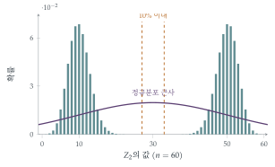

STEP II 2023, 문제 11
다음으로 넘어가기 전에 문제를 먼저 읽어 보자. 이 문제는 OCR에서 내려받을 수 있는 2023년 STEP 문제지 모음(zip 파일)의 STEP II 문제지에 있다: www.ocr.org.uk/Images/707102-2023-past-papers.zip
도입
시험에서 부정행위를 한 학생이 몇 분의 몇인지, 혹은 직장에서 물건을 훔친 직원이 몇 분의 몇인지 어떻게 알아낼 수 있을까? 직접 물어보면 많은 사람이 거짓말을 할 것이다. 1965년 통계학자 Stanley Warner는 기발한 해결책인 확률화 응답(randomised response)을 고안했다. 각 사람은 몰래 동전을 던지거나 주사위를 굴리고, 그 결과에 따라 민감한 질문에 사실대로 답할지, 아니면 그 반대 질문에 답할지가 정해진다. 면접자는 어느 쪽인지 결코 알 수 없으므로 어떤 개인의 답도 그 사람에게 불리한 증거가 되지 않는다. 그런데도 확률화에 쓰인 확률을 알고 있으므로 전체 비율은 여전히 추정할 수 있다.
이 문제는 그 뒤에 숨은 수학을 탐구한다. 각 사람을 독립적으로(independently) 확률화하면(소문항 (ii)) 비율을 정확히 짚어 내는 잘 행동하는 합계를 얻는다. 반면 모든 사람을 단 한 번의 동전 던지기로 확률화하면(소문항 (iii)) 평균은 같지만 봉우리가 두 개인 전혀 다른 분포의 합계가 나오고, 이것은 우리에게 거의 아무것도 알려 주지 않는다. 무작위성을 어디에 두느냐가 중요하다.
시작하기 전에
\(Y\)는 확률 \(p\)로 \(X_1\)이고 확률 \(q\)로 \(X_2\)이다. \(\mathrm{E}(Y)\)는 무엇인가? \(\mathrm{E}(Y^2)\)는 무엇인가?
어느 변수가 선택되는지에 대해 조건화(conditioning)하면 \(\mathrm{E}(Y) = p\mu_1 + q\mu_2\)이고, \(\mathrm{E}(Y^2) = p\,\mathrm{E}(X_1^2) + q\,\mathrm{E}(X_2^2) = p(\sigma_1^2 + \mu_1^2) + q(\sigma_2^2 + \mu_2^2)\)이다.
차근차근 풀기
단계 1 혼합분포의 분산
\[\mathrm{Var}(Y) = p(\sigma_1^2 + \mu_1^2) + q(\sigma_2^2 + \mu_2^2) - (p\mu_1 + q\mu_2)^2.\] \(p - p^2 = pq\)와 \(q - q^2 = pq\)를 이용하면 \(\mu\)가 들어간 항은 \(p\mu_1^2 + q\mu_2^2 - p^2\mu_1^2 - 2pq\mu_1\mu_2 - q^2\mu_2^2 = pq\mu_1^2 + pq\mu_2^2 - 2pq\mu_1\mu_2\)이다. 따라서 \[\mathrm{Var}(Y) = p\sigma_1^2 + q\sigma_2^2 + pq(\mu_1 - \mu_2)^2. \qed\] 혼합분포(mixture)의 분산(variance)은 각 성분 내부 분산의 평균에 성분들의 평균 사이의 분산을 더한 것이다.
단계 2 독립적인 확률화
\(\mathrm{P}(B = 1)\)은 무엇인가? \(B\)의 \(n\)개 값은 서로 독립인가?
\(\mathrm{P}(B = 1) = \frac12\cdot\frac16 + \frac12\cdot\frac56 = \frac12\)이다. \(n\)개의 값은 서로 독립이고 각각의 성공 확률이 \(\frac12\)이므로 \(Z_1 \sim \mathrm{B}(n, \frac12)\)이며, 평균은 \(\frac n2\), 표준편차(standard deviation)는 \(\frac{\sqrt n}{2}\)이다.
평균의 \(10\%\) 이내라는 것은 \(|Z_1 - \frac n2| < \frac{n}{20}\)이라는 뜻이다. 표준화한 단위로는 \(|Z| < \frac{n/20}{\sqrt n/2} = \frac{\sqrt n}{10}\)이고, 이 값은 무한대로 발산하므로 확률은 \(1\)로 수렴한다.■
단계 3 모두를 위한 동전 하나
이제 동전 던지기 한 번이 \(n\)개의 주사위 전부에 대해 결정한다. 앞면이 나왔을 때 \(Z_2\)의 분포는 무엇인가? 뒷면이 나왔을 때는? 소문항 (i)을 이용하라.
앞면이 나오면 \(Z_2 \sim \mathrm{B}(n, \frac16)\)이고, 평균은 \(\frac n6\), 분산은 \(\frac{5n}{36}\)이다. 뒷면이 나오면 \(Z_2 \sim \mathrm{B}(n, \frac56)\)이고, 평균은 \(\frac{5n}{6}\), 분산은 \(\frac{5n}{36}\)이다. \(p = q = \frac12\)로 소문항 (i)을 적용하면 \[\mathrm{E}(Z_2) = \frac n2, \qquad \mathrm{Var}(Z_2) = \frac{5n}{36} + \frac14\Bigl(\frac{4n}{6}\Bigr)^2 = \frac{5n}{36} + \frac{n^2}{9}.\]
확률의 대부분은 어디에 있는가? 평균 \(\frac n2\) 근처에 확률이 많이 있는가?
\(Z_2\)는 \(\frac n6\)과 \(\frac{5n}{6}\) 근처에 폭이 대략 \(\sqrt n\)인 봉우리 두 개를 가지며(그림 13.5.1), 그 사이에는 거의 아무것도 없다. 평균과 분산이 같은 정규분포(normal distribution)라면 \(\frac n2\)를 중심으로 하는 봉우리 하나일 텐데, 그곳은 바로 \(Z_2\)가 거의 놓이지 않는 자리이다. \(Z_2\)가 \(\frac n2\)의 \(10\%\) 이내에 있으려면 \(\mathrm{B}(n, \frac16)\) 또는 \(\mathrm{B}(n, \frac56)\) 확률변수가 \([0.45n, 0.55n]\)에 놓여야 한다. \(\mathrm{B}(n, \frac16)\)의 경우 이는 평균보다 적어도 \(0.28n\)만큼 위에 있다는 뜻이고, 이는 표준편차로 약 \(\frac{0.28n}{0.37\sqrt n} \approx 0.75\sqrt n\)배에 해당하므로 확률은 \(0\)으로 수렴한다. \(\mathrm{B}(n, \frac56)\)도 마찬가지이다.■

돌아보기
숨겨진 선택에 대해 조건화하라. 혼합분포의 평균과 분산은 어느 성분이 선택되었는지에 대해 조건화하여 얻었다.
내부 분산 더하기 사이 분산. 추가된 항 \(pq(\mu_1 - \mu_2)^2\)은 두 성분 사이의 퍼짐을 측정했다.
평균과 분산이 전부는 아니다. \(Z_2\)는 \(Z_1\)과 평균이 같았지만 모양은 전혀 달랐다.
숨은 수학
확률화 응답
Warner의 방식에서 각 응답자는 남몰래 선택하여, 확률 \(p\)로 “당신은 집단 \(A\)에 속합니까?”에 답하고, 확률 \(1 - p\)로 “당신은 집단 \(A\)에 속하지 않습니까?”에 답한다. 비율 \(\pi\)만큼의 사람이 \(A\)에 속한다면 “예”라고 답할 확률은 \[\lambda = p\pi + (1 - p)(1 - \pi),\] 이므로, 관측된 “예”의 비율 \(\hat\lambda\)로부터 \(\hat\pi = \frac{\hat\lambda - (1 - p)}{2p - 1}\)로 추정할 수 있다(단, \(p \neq \frac12\)). 문제의 소문항 (ii)가 바로 이것이며, 각자의 주사위가 결정을 내린다. 프라이버시의 대가는 정밀도이다. \(2p - 1\)로 나누면 분산이 커지므로, 확률화된 조사는 직접 조사보다 더 많은 응답자가 필요하다. 하지만 각 사람이 독립적으로 확률화하므로 큰수의 법칙(law of large numbers)이 작동한다. 소문항 (iii)은 확률화를 공유하면 무엇이 잘못되는지 보여 준다. 단 하나의 동전에 대한 불확실성은 결코 평균화되어 사라지지 않는다.
차분 프라이버시
확률화 응답은 차분 프라이버시(differential privacy)의 조상이다. 차분 프라이버시는 2006년 Cynthia Dwork와 동료들이 도입한 프라이버시의 수학적 정의로, 어떤 한 사람의 데이터를 추가하거나 제거해도 모든 출력의 확률이 기껏해야 작은 배수만큼만 변한다면 그 절차는 프라이버시를 보장한다고 한다. 기술 기업들은 이를 이용해 사용 통계를 수집하며, 미국 인구조사국(United States Census Bureau)은 2020년 인구조사에서 이를 사용하여 공개되는 수치에 신중하게 보정한 무작위 잡음을 더함으로써 어떤 개인의 응답도 재구성할 수 없게 했다.
소문항 (i)의 항등식은 전분산 법칙(law of total variance)의 특수한 경우이다. 즉 \(\mathrm{Var}(Y) = \mathrm{E}\bigl(\mathrm{Var}(Y \mid C)\bigr) + \mathrm{Var}\bigl(\mathrm{E}(Y \mid C)\bigr)\)이며, 여기서 \(C\)는 숨겨진 선택이다. 이 법칙은 분산분석(analysis of variance)(ANOVA)의 바탕이 된다. 분산분석은 1920년대에 피셔(Ronald Fisher)가 로섬스테드(Rothamsted)에서의 농업 실험을 위해 도입한 것으로, 작물 수확량의 변동을 비료나 품종으로 설명되는 부분과 설명되지 않고 남는 부분으로 나눈다.
사고 기술
평균과 분산은 봉우리가 하나인 분포는 잘 설명하지만, 혼합분포에 대해서는 심하게 오해를 불러일으킬 수 있다. 확률이 실제로 어디에 있는지 물어라.
대학에서는 여러 집단으로 이루어진 모집단을 설명하는 데 혼합 모형(mixture model)을 사용하며, 전분산 법칙은 조사 설계에서 계층적 모형(hierarchical model)에 이르기까지 통계학의 표준 도구이다.
더 도전하기
쌍둥이. STEP II 2005, 문제 12를 풀어 보라. 이것은 겉모습만 바꾼 확률화 응답 퍼즐이다. 어떤 답이 동전에 대해 아무것도 알려 주지 않는 것은 언제인가?
\(\pi\) 추정하기. \(p = \frac34\)인 Warner 조사에서 \(400\)명이 응답했고 \(160\)명이 “예”라고 답했다. 집단 \(A\)의 비율 \(\pi\)를 추정하고, 그 추정값의 근사적인 표준오차(standard error)를 구하라.
전분산. 여러 값을 갖는 이산 숨은 변수 \(C\)에 대해 전분산 법칙을 증명하라.
공유된 동전. 소문항 (iii)에서 \(Z_2 > \frac n2\)일 확률은 얼마인가? \(Z_2\)가 \(\frac n2\)에 가까운 경우는 거의 없는데도, \(n\)이 클 때 이 확률이 \(\frac12\)에 가까운 이유를 설명하라.
더 읽을거리
Stanley Warner, “Randomized response: a survey technique for eliminating evasive answer bias”, Journal of the American Statistical Association 60 (1965).
Cynthia Dwork & Aaron Roth, The Algorithmic Foundations of Differential Privacy (온라인 무료 공개). 현대 이론을 다루며, 앞부분의 장들은 쉽게 읽을 수 있다.
David Spiegelhalter, The Art of Statistics (Pelican). 조사와 그 함정을 다룬다.